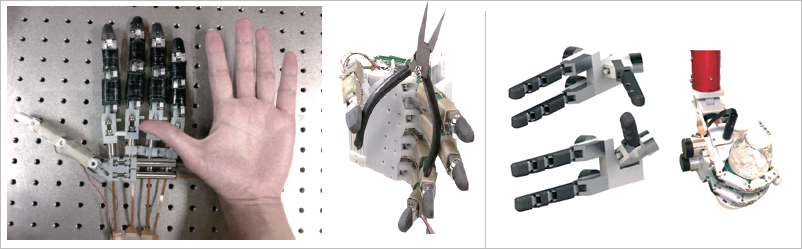
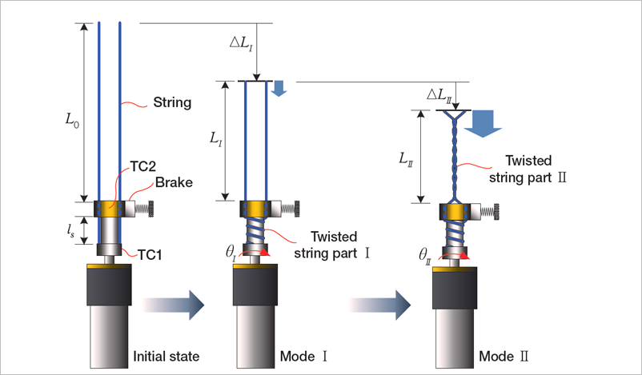

Report by Subjects
Report by Subjects
KAIST RESEARCH ACHIEVEMENTS
Dexterous Anthropomorphic Robotic Hand Of High Degree Of Freedom
(Dept. of Mechanical Engineering) Kyung-Soo Kim
Summary
The number of amputees who lose the functionality of hands or fingers has been increasing due to natural disasters, industrial accidents and, in particular, diseases. In 2033, they visited Korea to receive operations on their arm for a robotic hand in a hospital. The robotic hand is fully anthropomorphic in terms of size, the weight and the degree of freedom in motion. Thanks to this advanced robotic hand, they can return to a normal and happy life as they were.
R&D Report

As the technologies for robot design and the detection of bio-related signals rapidly improved, the artificial arm (or hand) operated by user intent has been widely studied. However, the human hand has very dexterous functions, and getting a robotic hand to mimic a human hand has been one of the most difficult problems in the field of robotics. The performance of robot hands is definitely dependent on the actuator or actuation mechanism. Thus, regardless of extensive research, robotic hands that are comparable to human hands have not been developed. In this point of view, innovative ideas on the actuation and control mechanism are necessary for advancing the robot hand design.
 Fig 2. 5 fingered robot hand and its application / 3 fingered robot hand for explosive handling
Since the 1900's, the artificial arm (or hand) has been developed due to industrial and medical needs. The human hand has very dexterous function, and the development of robotic hands mimicking it has been one of the most difficult problems in the field of robots.The performance of robot hands is definitely dependent on the actuator or actuation mechanism. Currently available actuators for robot hands may be the gear assembly with electric motors, pneumatic actuators or hydraulic actuators, which are all excessively bulky and heavy, compared to human muscles.
 Fig 3. Dual mode twisting actuation principle
To tackle these issues with the actuation mechanism, in this study, we newly proposed the 'dual-mode twisting actuation' and 'electromagnetic (EM) joint clutch mechanism' in order to break through the performance limits of conventional robot hands. The dual-mode twisting actuation is a kind of torque-force converter utilizing the relatively strong contraction force caused by twisting two strings. In particular, the actuation mechanism allows the flexible operations among the force mode and the speed mode so that the robot finger using it has the high speed motion and large grasping force, and is of lightweight. The EM clutch mechanism constrains the joint angle effectively with small power consumption so that the robot finger has the multi-DOF(degree of freedom) motion, while it is driven by the single motor. Thanks to these innovative mechanisms, the proposed robot hand shows outstanding performance such as large grasping force, high speed motion, and high DOF as well, regardless of its lightweight and small size. The proposed robot hands are expected to be used for highly dexterous operations (e.g., handling the explosives) or the bionic arm for rehabilitation purposes.
Expectation Effectiveness
The study provides an important contribution in that a new actuation mechanism of lightweight, high force output and high speed is newly proposed, different from the conventional approach based on motor and gear mechanisms. In particular, using this new mechanism, the robot hand which is fully anthropomorphic allows highly dexterous operation and high grasping force as well. The proposed robot hands are expected to be adopted for various applications for industrial and medical purposes.
Research Funding
ㆍThis study is supported by the Ministry of Trade, Industry and Energy (MOTIE), KOREA under the R&D program: workforce education project on special purpose manipulation system (2008.9.~2013.2.).
Research Results
ㆍYoung June Shin, Ho Ju Lee, Kyung-Soo Kim, and Soohyun Kim, "A Robot Finger Design Using a Dual-Mode Twisting Mechanism to Achieve High-Speed Motion and Large Grasping Force", IEEE TRANS. ON ROBOTICS, 28(6), p.1398-1405, 2012
ㆍHo Ju Lee, Young June Shin, Kyung-Soo Kim, Soohyun Kim, "Finger Module Design based on Dual-mode Twisting Actuation for Explosive Ordnance Disposal Gripper", Proc. of the 44th International Symposium on Robotics, 2013.
ㆍKyung-Soo Kim, Soohyun Kim, Young June Shin, "Dual mode mechanism using twisted string actuation", Korean Patent, Registration No: 10-1261986, Registration Date: 2013-05-02